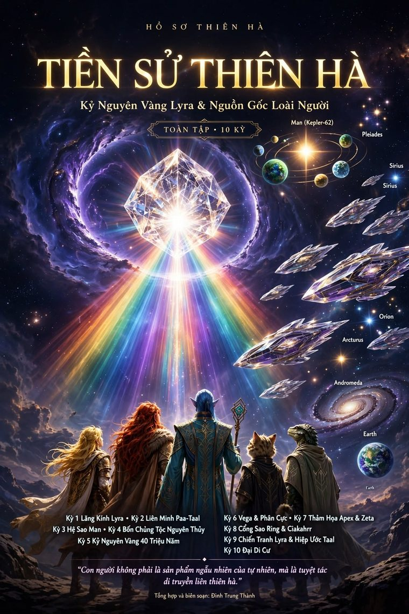

Trang chủ / Chuyên đề / Chuyên đề 1

Chuyên đề 1 · 10 kỳ
Tiền Sử Thiên Hà
Khởi nguyên Vũ trụ, Lăng Kính Lyra, các Đấng Sáng Lập và cuộc Đại Di Cư vĩ đại.
-
Kỳ 1
SỰ KHAI MỞ VŨ TRỤ & BÍ ẨN LĂNG KÍNH CỦA LYRA (DIMENSIONAL INFUSION)
Bạn đã bao giờ dừng lại giữa đêm tĩnh lặng, ngước nhìn lên dải Ngân Hà rực rỡ và tự hỏi: Trước khi các hành tinh, các vì sao hay các nền văn minh thiên hà xuất hiện, Vũ trụ của chúng ta trông như thế nào? Ý thức của con người thực sự bắt nguồn từ đâu trong…
Đọc kỳ này → -
Kỳ 2
LIÊN MINH PAA-TAAL (SEEDERS) & DỰ ÁN GIEO MẦM LIÊN THIÊN HÀ
Ở Kỳ 1, chúng ta đã cùng nhau quay ngược thời gian về cội nguồn nguyên thủy, giải mã bí ẩn Lăng Kính Của Lyra — nơi dải ánh sáng ý thức Toàn Thể từ Nguồn đi qua Lỗ Trắng để phân rã thành 7 dải mật độ nhận thức và kiến tạo nên cấu trúc đa chiều của dải Ngân…
Đọc kỳ này → -
Kỳ 3
HỆ SAO MAN (KEPLER-62) — NÔI TỔ TIÊN CỦA LOÀI NGƯỜI THIÊN HÀ
Ở hai kỳ trước, chúng ta đã cùng nhau khám phá khoảnh khắc khởi nguyên khi dòng ý thức Toàn Thể từ Nguồn đi qua Lăng Kính Của Lyra để phân rã thành 7 dải mật độ nhận thức, cũng như quy trình thiết kế bản thiết kế di truyền 12 chuỗi DNA của Liên minh Các Đấng…
Đọc kỳ này → -
Kỳ 4
4 CHỦNG TỘC NGƯỜI NGUYÊN THỦY (AHEL, NOOR, TAAL, LAAN) & DÒNG BÒ SÁT LADRAKH
Ở ba kỳ trước, chúng ta đã cùng nhau chứng kiến những cột mốc vĩ đại của bình minh thiên hà: Từ sự phân rã dải ý thức Toàn Thể qua Lăng Kính Của Lyra , bản thiết kế di truyền 12 chuỗi DNA của Liên minh Paa-Taal , cho đến bức tranh môi trường sống thiên đường…
Đọc kỳ này → -
Kỳ 5
VĂN HÓA, NGÔN NGỮ TAAMI & KỶ NGUYÊN VÀNG NÔNG NGHIỆP 40 TRIỆU NĂM
Ở các kỳ trước, chúng ta đã cùng nhau khám phá khoảnh khắc khởi nguyên khi dòng ý thức Toàn Thể đi qua Lăng Kính Của Lyra , bản thiết kế di truyền 12 chuỗi DNA của Liên minh Paa-Taal , môi trường thiên đường tại Hệ Sao Man (Kepler-62) , cũng như sự phân hóa…
Đọc kỳ này → -
Kỳ 6
NHÁNH VĂN MINH VEGA (OLMEEKA) & BIẾN CỐ PHÂN CỰC TRIẾT LÝ
Ở các kỳ trước, chúng ta đã cùng nhau chứng kiến Kỷ nguyên Vàng 40 triệu năm rực rỡ tại hệ sao Man (Kepler-62) — nơi 5 chủng tộc khởi nguyên (Ahel, Noor, Taal, Laan, Ladrakh) sống trong sự hòa hợp, sử dụng cổ ngữ tần số Taami và xây dựng mô hình nông nghiệp…
Đọc kỳ này → -
Kỳ 7
THẢM HỌA HÀNH TINH APEX & NGUỒN GỐC BI THƯƠNG CỦA CHỦNG TỘC ZETA RETICULI
Ở Kỳ 6, chúng ta đã chứng kiến cột mốc phân cực triết lý đầu tiên trong Ngân Hà — sự ra đời của nhánh văn minh Vega (Olmeeka) đại diện cho Cực Âm (Kiểm soát, Kỷ luật, Self-Mastery) đối trọng với Cực Dương (Tự do, Mở rộng, Phục vụ người khác) của nôi tổ tiên…
Đọc kỳ này → -
Kỳ 8
CỔNG SAO TINH VÂN RING & SỰ XUẤT HIỆN CỦA ĐẾ CHẾ BÒ SÁT CIAKAHRR
Ở Kỳ 7, chúng ta đã chứng kiến thảm họa đau xót trên hành tinh Apex — nơi sự lệch pha giữa công nghệ siêu việt và sự đóng băng của Luân xa Tim đã xé rách không-thời gian, đẩy hành tinh này sang hệ sao Zeta Reticuli và biến đổi cư dân Apex thành chủng tộc…
Đọc kỳ này → -
Kỳ 9
THẢM HỌA CHIẾN TRANH LYRA & HIỆP ƯỚC CỨU DÂN CỦA HOÀNG GIA TAAL
Ở Kỳ 8, chúng ta đã chứng kiến bầu không khí u ám ngưng trệ khi hạm đội viễn chinh khổng lồ của Đế chế Bò sát Ciakahrr (Alpha Draconians) áp sát ranh giới chòm sao Thiên Cầm. Với tư tưởng "Chủ nhân hợp pháp duy nhất của Vũ trụ" cùng tham vọng thâu tóm Cổng…
Đọc kỳ này → -
Kỳ 10
CUỘC ĐẠI DI TẢN RỜI NÔI LYRA & SỰ KHỞI ĐẦU CỦA CUỘC ĐẠI DI CƯ (THE GREAT EXPANSION)
Vậy là hành trình 10 kỳ của chuyên đề 1: Tiền Sử Thiên Hà — Kỷ Nguyên Vàng Lyra & Nguồn Gốc Loài Người đã đi đến chặng đường khép lại. Chúng ta đã cùng nhau quay ngược dòng thời gian về hàng triệu năm trước, chứng kiến khoảnh khắc dải ý thức Toàn Thể đi qua…
Đọc kỳ này →